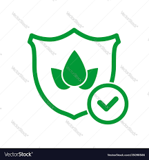

A bot can be a valuable tool in an agricultural app to help farmers clarify their doubts and provide assistance with various agricultural queries.
Weather
Access real-time weather information, including temperature, humidity, wind speed, and precipitation, for their specific location.

Crop Insurance
Provide comprehensive information about various crop insurance programs available in the region, including government-subsidized and private insurance options.